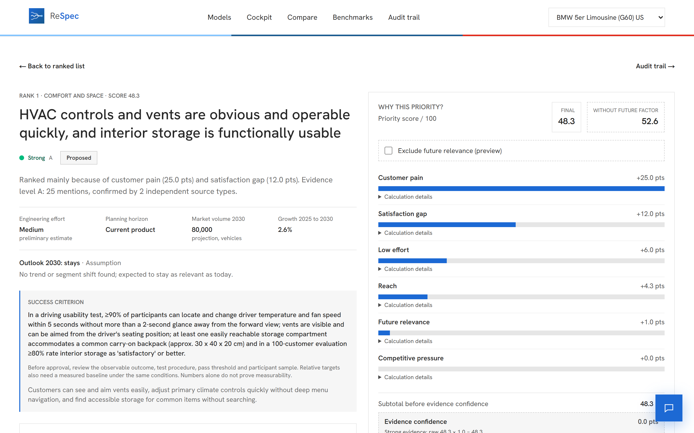
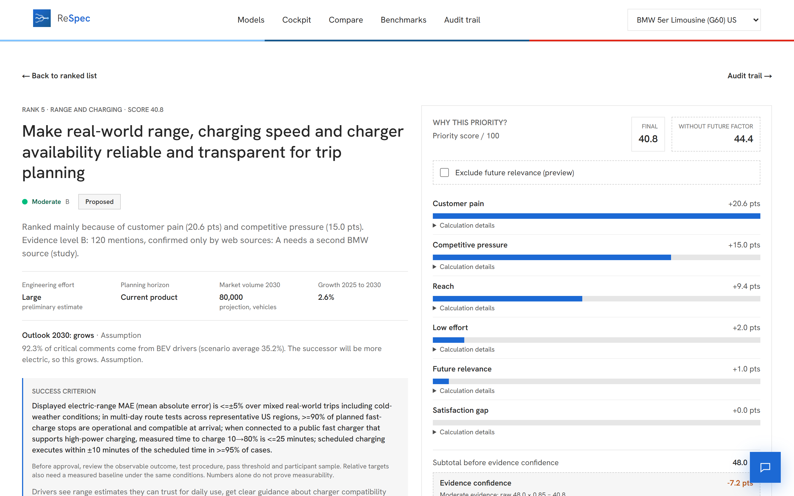
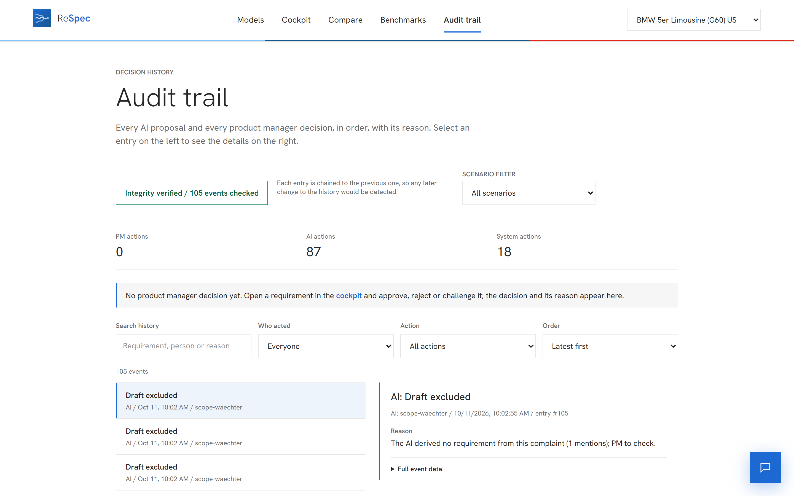

Respect the voice. Define the spec.
From thousands of customer comments to a ranked, evidence-backed requirement list for the next 5 Series, with the product manager in control of every decision.
EV-G60-US-FB-G60-1594 · BMW 5 Series (G60) · United States
3,867 pieces of evidence like this for one model in one market. Today a PM reads them by hand.
Every requirement links to findings, every finding to original quotes, internal data plus web sources. The ranking is plain code, not a black box. The PM approves, edits or rejects.

Transparent reasoning: score waterfall, original quotes, evidence level A.

Conflicting evidence: shown, not averaged away. PM questions the AI, edits, approves.

PM firmly in control: change a weight, list re-ranks, every step is logged.
Honest limit: humans checked AI suggestions on 50 pairs, no blind label, no confidence interval. Grounding proves a source exists, not that the conclusion is right.
New model or market = one JSON file
Readable without a speaker
Level A/B means strong/moderate support, not absolute truth.
Rough estimate and DE list prices as context. No optimised business case, no measured time saving.
50 labelled pairs, humans checked AI suggestions. Blind second label is the next step.
Regulation, detailed technical design, detailed profitability.
Who, when, why, before and after. Each entry carries the hash of the previous one, so edits break the chain and verification shows where. CSV export included.